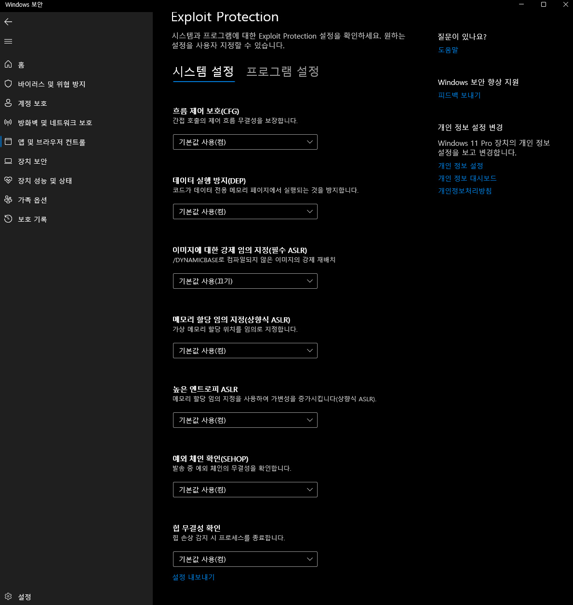
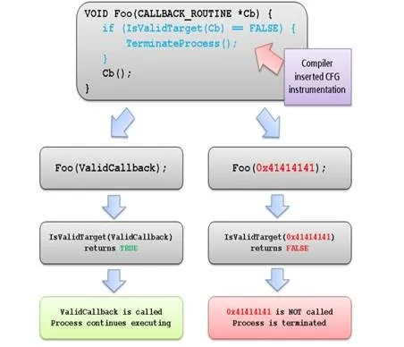

[Research] Bypassing Windows Kernel Mitigations: Part1 - Overview (En)
Bypassing Windows Kernel Mitigations: Part1 - Overview ← Now
Bypassing Windows Kernel Mitigations: Part2 - CVE-2024-21338
Finally… I’m back with a research paper after three years! Actually, I tried to write a research paper a year ago, but I had a mental breakdown due to graduation and job hunting, so I ended up abandoning it. So I’ve brought back some of the drafts I wrote.

A year ago, I was looking at dummy data of research papers that had been published…
I graduated and got a job, and now I’m in my second year as a researcher, so I’ll try to upload it from time to time :)
Introduction
To summarize the previous series, it was a privilege escalation vulnerability using Arbitrary Physical Address R/W caused by insufficient verification when calling the MmMapIoSpace function of the AMD Ryzen Master driver. For more information, please refer to https://hackyboiz.github.io/2021/05/30/l0ch/windows-driver/. In fact, the previous series was a physical memory RW caused by the incorrect use of the MmMapIoSpace function, so there was no need to bypass the mitigation and it was possible to find the mapped memory page with the token and overwrite the entire page! So, let’s take a look at the mitigation bypass techniques used in more common kernel exploits.
Windows Kernel Mitigations
There are so many mitigations for Windows, and new ones are emerging all the time, making it increasingly difficult to exploit vulnerabilities.

You can briefly check the Exploit Protection applied in the Windows Security app.
Among the mitigations, I will briefly summarize the mitigations applied to the Windows kernel, especially DEP, kASLR, SMEP, and kCFG, which are designed to prevent exploits caused by memory corruption.
For mitigations not mentioned in this article, such as CET (Control-flow Enforcement Technology) or the relatively recently applied VBS-based KDP/HVCI/DSE, and for the version history information, please refer to the github link!
DEP (Data Execution Protection)
The kernel’s DEP is the same concept as Userland’s DEP, which is a technique that prevents shellcode execution by restricting the execution permissions of the stack/heap. The bypass method is also the same as ROP! However, the kernel has one more mitigation that extends from DEP, which will be discussed in detail in SMEP, which will be explained later.
kASLR (Kernel Address Layout Randomization)
kASLR is also the same concept as ASLR in userland, but in the case of the Windows kernel, there is a very useful function called NtQuerySystemInformation, which is available at the Medium Integrity level, making it easy to prevent memory leaks. a piece of cake!
NtQuerySystemInformationis a function that returns various information about the current OS system, and is defined as follows.
typedef NTSTATUS(WINAPI* PNtQuerySystemInformation)(
__in SYSTEM_INFORMATION_CLASS SystemInformationClass, // 1. Specify the type of system information to be imported
__inout PVOID SystemInformaton, // 2. Buffer to store the returned system information
__in ULONG SystemInformationLength, // 3. Buffer size delivered to 2
__out_opt PULONG ReturnLength // 4. The buffer size actually returned
) The first argument, SystemInformationClass, is one of the values of the enumerated class SYSYTEM_INFORMATION_CLASS, and you can give an enumerated value depending on the information to be queried.
typedef enum _SYSTEM_INFORMATION_CLASS {
SystemBasicInformation, // 0
SystemProcessorInformation, // 1
SystemPerformanceInformation, // 2
SystemTimeOfDayInformation, // 3
SystemNotImplemented1, // 4
SystemProcessesAndThreadsInformation, // 5
SystemCallCounts, // 6
SystemConfigurationInformation, // 7
SystemProcessorTimes, // 8
SystemGlobalFlag, // 9
SystemNotImplemented2, // 10
SystemModuleInformation, // 11
SystemLockInformation, // 12
SystemNotImplemented3, // 13
SystemNotImplemented4, // 14
SystemNotImplemented5, // 15
SystemHandleInformation, // 16
SystemObjectInformation, // 17
SystemPagefileInformation, // 18
SystemInstructionEmulationCounts, // 19
SystemInvalidInfoClass1, // 20
SystemCacheInformation, // 21
SystemPoolTagInformation, // 22
SystemProcessorStatistics, // 23
SystemDpcInformation, // 24
SystemNotImplemented6, // 25
SystemLoadImage, // 26
SystemUnloadImage, // 27
SystemTimeAdjustment, // 28
SystemNotImplemented7, // 29
SystemNotImplemented8, // 30
SystemNotImplemented9, // 31
SystemCrashDumpInformation, // 32
SystemExceptionInformation, // 33
SystemCrashDumpStateInformation, // 34
SystemKernelDebuggerInformation, // 35
SystemContextSwitchInformation, // 36
SystemRegistryQuotaInformation, // 37
SystemLoadAndCallImage, // 38
SystemPrioritySeparation, // 39
SystemNotImplemented10, // 40
SystemNotImplemented11, // 41
SystemInvalidInfoClass2, // 42
SystemInvalidInfoClass3, // 43
SystemTimeZoneInformation, // 44
SystemLookasideInformation, // 45
SystemSetTimeSlipEvent, // 46
SystemCreateSession, // 47
SystemDeleteSession, // 48
SystemInvalidInfoClass4, // 49
SystemRangeStartInformation, // 50
SystemVerifierInformation, // 51
SystemAddVerifier, // 52
SystemSessionProcessesInformation // 53
} SYSTEM_INFORMATION_CLASS;Among the enumerated values above, SystemModuleInformation can be used to obtain the system image base address such as ntoskrnl, and SystemHandleInformation can be used to obtain the EPROCESS address, which is a structure containing process information such as Privilege Token and ImageName.
In this way, NtQuerySystemInformationcan be used to easily obtain the address required for EXE, so kASLR is not very effective except for kernel components such as http.sysor tcpip.syswhere a remote surface exists.

However, starting with Windows 24H2, which was officially released a while ago, the NtQuerySystemInformation function can only be called by processes with the SeDebugPrivilege debug privilege flag enabled. In the future, when we exploit memory corruption vulnerabilities, we may have to find additional leak vulnerabilities…? No, MS, Are you kidding me?
However, a pre-patching leak technique inspired by the EntryBleed vulnerability (CVE-2022-4543) in Linux has also been discovered, so it remains to be seen whether kASLR will become completely impossible to bypass. For more information, please refer to Exploiting the NT Kernel in 24H2: New Bugs in Old Code & Side Channels Against KASLR!
SMEP (Supervisor Mode Execution Protection)
SMEP prevents the CPU from executing code in memory, including code segments in Userland (ring 3), while in Supervisor Mode (ring 0). The SMEP flag is located in the 20th bit of the cr4 register.

source: https://ctf-wiki.mahaloz.re/pwn/linux/kernel/bypass_smep/
The reason why such mitigation is added to DEP is that local privilege escalation that exploits kernel vulnerabilities is based on the premise that the attacker can execute arbitrary code at the minimum Medium Integrity level. (This is also why kASLR is not very effective as a kernel mitigation!) Without SMEP, an attacker can allocate executable memory in userland to load and execute shellcode.
In fact, since SMEP is a mitigation that extends from DEP to kernel ↔ user, it is easy to approach the bypass using the ROP concept. By patching the cr4 register with a random value using a gadget in a kernel code segment, SMEP can be disabled and shellcode in userland can be executed.
pop rcx; ret
mov cr4, rcx; ret

kCFG (Kernel Control Flow Guard)
kCFG is a forward-edge CFI (Control Flow Integrity) mitigation applied to the Indirect Call instruction in the kernel. There is also a backward-edge CFI, CET, but we will not be covering CET in this series, so we will skip it!

__guard_disaptch_icall_fptr is a runtime address sanitizer added with cfg activation during the compilation process, which checks the function pointer before calling it. The figure below shows a simple graph of the CFG operation.

source: https://learn.microsoft.com/en-us/windows/win32/secbp/control-flow-guard
kCFG throws an exception that is not the address of a normal kernel function registered in the bitmap, causing KERNEL_SECURITY_CHECK_FAILURE to occur. kCFG is used to prevent the CWE-822: Untrusted Pointer Dereference arbitrary callback pointer dereference vulnerability. To bypass kCFG, simply call a normal kernel function that passes the check. Using a kernel function that allows limited Arbitrary Read/Write using a vulnerability that controls the callback pointer, and obtaining a Full Arbitrary Read/Write primitive through data corruption can lead to Token Swapping.
In the next part, we will analyze the vulnerabilities of the Windows built-in kernel driver and go into more detail on the basic data corruption exploit techniques using PreviousMode, SedebugPrivilege, and IoRing, and how to achieve this while bypassing kCFG!
Reference
https://ctf-wiki.mahaloz.re/pwn/linux/kernel/bypass_smep/
https://www.willsroot.io/2022/12/entrybleed.html
https://github.com/exploits-forsale/prefetch-tool
https://windows-internals.com/kaslr-leaks-restriction/
https://exploits.forsale/24h2-nt-exploit/
https://github.com/nccgroup/exploit_mitigations/blob/main/windows_mitigations.md
https://www.crowdstrike.com/en-us/blog/state-of-exploit-development-part-1/